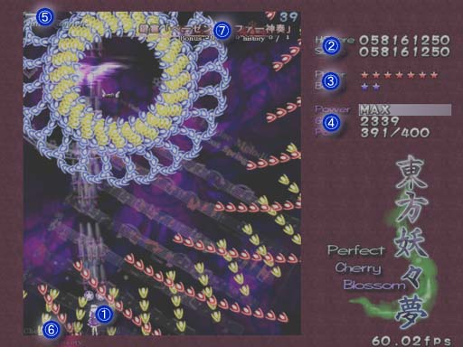

少女弾幕奇譚
東方妖々夢 〜 Perfect Cherry Blossom.
■画面説明

１．プレイヤー（あたり判定の中心は、低速移動時に現れる赤い点です）
２．最高得点 ･･･ 現在のキャラ、武器、難易度での過去ハイスコア
得点 ･･･ プレイ中のスコア
３．プレイヤー残機と残りボム数
４．パワー ･･･ Ｍａｘと表示されたらパワー最大です（１２８個で最大）
敵弾かすり回数
得点アイテム取得数／次回エクステンド必要数
５．真ん中のゲージ、ボス（中ボス）の残り体力
左のゲージ、ボス（中ボス）の体力ゲージの残り本数
右の数字、ボス（中ボス）の自爆までの残り時間
６．上、現在の桜点＋
下、現在の桜点／桜点最大数
なお、森羅結界発動中は「森羅結界」と表示されます
７．スペルカードの名前、ボーナス点、取得回数／遭遇回数
プログラム本体、イメージデータ、曲データ、及びマニュアル全ての著作権は製作者ＺＵＮにあります。
許可なしで複製、転載、配布を禁じます。
2002,2003 (C)opyright ZUN. All rights reserved.